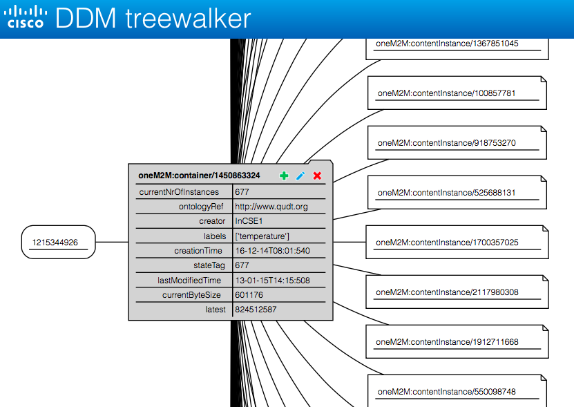

Project logistics
- Mentors:
- Jim Ballingall, IAP Executive Director.
email: jim at industry-academia dot org[LinkedIn]
- Lionel Florit, Cisco Principal Engineer [LinkedIn]
- Min-max team size: 3-5
- Expected project hours per week (per team member): 10
- Will the project be open source? Yes
Preferred past experience
- Competency in Java, Python, Javascript,
- MVC/MVVM UI Frameworks (e.g. Anjular),
- NoSQL Databases (e.g MongoDB),
- Message BUS (e.g. AMQP), WEB App Frameworks (e.g. Vertx),
- Graph Tools (e.g. Sigma), ODL DLUX UI framework, ODL Architecture
Problem
Internet of Things defines a network composed of multiple elements of different sizes, shape and functions [2, 3]. Currently there lacks a means to represent large IoT data resource trees in a visually and/or application-consumable manner. The requirement for this project is to design, develop and prototype a user and application interface that enables.
Description
OpenDaylight (ODL) is being used as an Internet of Things (IoT) data collection platform [4, 1]. The IoT data is organized in a massive resource tree (potentially millions of nodes). This tree contains measurements from devices (the things) and its associated attributes. The attributes represent metadata about the resource, for example access rights, creation time, children list, owner, size, quota etc.
We need a tool to access and visualize this resource tree, and maybe even modify the tree structure (e.g. edit object). This would be used by any IoT application and/or operatot with authorization to access the data. The tool needs to allow the user to express what needs to be displayed and transfer as little information as possible from the data store to display it. This will involve some form of data aggregation and filtering, likely performed as either an ODL plug-in or a function-specific application back-end.

This is a representation of a portion of the resource tree (DDM: Distributed Data Management). We see that when the data set grows to thousands of children or levels, it is very difficult to visualize and use this data.
Deliverables
- Visualization tool running in a web browser allowing the representation of sub-sections of a tree with 1M+ nodes. Only what can be visualized should be transferred. Response time is important.
- Define strategies to minimize the data transfer
- Rendering and tree graphical representation should happen on the server side (ODL), allowing very little to no requirement ( beyond a web browser) on the client side
- Possibility to edit existing resource tree objects. Stretch goal: Possibility to add resource tree objects, to augment the tree.
- Documentation of your work
Let your creativity go wild, invent an original way to manage a super large tree
References
- Internet of Things Data Management (IOTDM) : https://wiki.opendaylight.org/view/Project_Proposals:Internet_of_Things_Data_Management_(IOTDM)
- oneM2M: http://www.onem2m.org
- More oneM2M technical specifications: http://www.onem2m.org/technical/candidate-release-august-2014
- oneM2M Functional Architecture: TS0001
- oneM2M Webinar: Taking a look inside oneM2M
- OpenDaylight: http://www.opendaylight.org